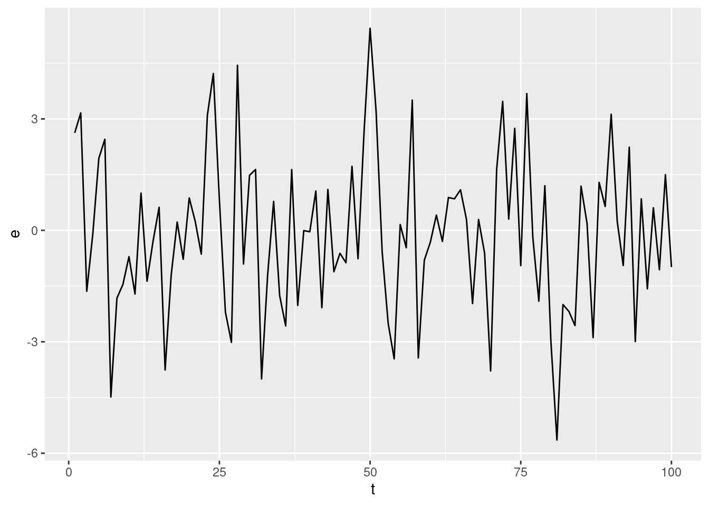
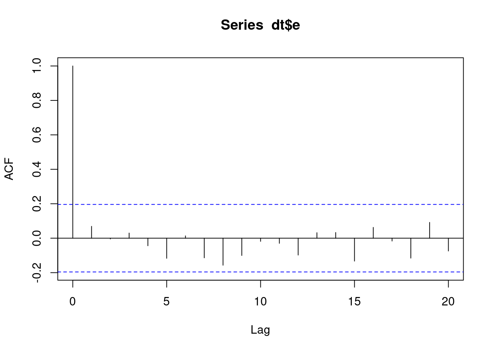

── Attaching core tidyverse packages ──────────────────────── tidyverse 2.0.0 ──
✔ dplyr 1.1.3 ✔ readr 2.1.4
✔ forcats 1.0.0 ✔ stringr 1.5.0
✔ ggplot2 3.4.4 ✔ tibble 3.2.1
✔ lubridate 1.9.3 ✔ tidyr 1.3.0
✔ purrr 1.0.2
── Conflicts ────────────────────────────────────────── tidyverse_conflicts() ──
✖ dplyr::filter() masks stats::filter()
✖ dplyr::lag() masks stats::lag()
ℹ Use the conflicted package (<http://conflicted.r-lib.org/>) to force all conflicts to become errors
Time series process: sequence of random variables
\[
y_1, y_2,\ldots,y_{T}
\]
For the rest of the course we will drop the distinction between the random variables (the stochastic process) and the observed values of the time series. You need to discern from the context whether we are talking about the random variables of about the values.
4.1 The Purely Random Process
In the last class we discussed linear difference equations and their stability. Here we will introduce randomness into the difference equation by assuming that the autonomous terms \(e_t\) are uncorrelated and follow a distribution with zero mean and constant variance (not depending on the time index).
Definition 4.1 (The Purely Random Process) A stochastic process \(e_t\) with the follwing three properties is called a purely random or a white noise process.
\[
\begin{align}
& E(e_t) = 0 \text{ for all } t \\
& Var(e_t) = \sigma^2, \sigma^2 \in \mathbb{R} \\
& Cov(e_{t}, e_{t + k}) = 0, k \neq 0
\end{align}
\]
From the definitions of variance (Definition 2.1) and covariance (Definition 2.2) you can see that the covariance between two time points is simply the expected value of the cross product of the terms, because \(E(e_t) = 0\) for all \(t\).
\[
Cov(e_t, e_{t + k}) = E(e_{t}e_{t + k}) = 0
\]
When \(k = 0\), this expression reduces to
\[
Cov(e_t, e_{t + 0}) = E(e_t e_t) = E(e_t^2) = \sigma^2
\] How does such a process look like? It is convenient to generate random values in order to visualize it.
n <-100dt <-tibble(t =1:n,e =rnorm(# The number of values to be drawn at randomn = n, # The expected value of the distributionmean =0,# The standard deviation of the distributionsd =2 ))dt %>%ggplot(aes(x = t, y = e)) +geom_line()

In order to see how the two parameters of the normal distribution affect the shape of the resulting series, the following code chunk shows four series:
and you can visualize the auto-correlation coefficients
acf(dt$e)

Even though the time series was generated from a process without zero correlations, the empirical auto-correlation coefficients will generally be non-zero. In order to assess whether the observed correlations are compatible with zero theoretical correlations, you can use the confidence interval
\[
0 \pm \frac{2}{\sqrt{T}}
\] that is shown as the two dashed horizontal lines in the plot.
The Box-Ljung test is a statistical test for the hypothesis
\[
\rho_{1} = \rho_2 = \rho_{k} = 0
\]
and is based on the test statistic:
\[
Q = T(T + 2)\sum_{j = 1}^{k}\frac{\hat{\rho}^2(j)}{T - j}
\] Under the null hypothesis (i.e., if we assume the null hypothesis to be true) it follows a \(\Chi^2\) distribution with \(k\) degrees of freedom.
The autoregressive (AR) process of first order is defined by
\[
y_{t} = \phi_0 + \phi_1 y_{t - 1} + e_t
\]
where \(\phi_0, \phi_1 \in \mathbb{R}\) are fixed (non-random) constants, and \(e_t\) is a purely random process.
We would like to derive the statistical properties of the process (expected value, variance and correlations) from the model definitions.
Let’s give it a try. To derive it we use the model definition, the properties of the expected value operator from Theorem 2.1, and the properties of the purely random process in Definition 4.1. The expected value of the process is then
\[
\begin{align}
E(y_t) & = E(\phi_0 + \phi_1 y_{t - 1} + e_t) \\
& = E(\phi_0) + E(\phi_1 y_{t - 1}) + E(e_t) \\
& = \phi_0 + \phi_1 E(y_{t - 1}) + 0 \\
& = \phi_0 + \phi_1 E(y_{t - 1})
\end{align}
\] Now we may seem to have hit a dead end, because knowing the expected value of \(E(y_t)\) requires the knowledge of \(E(y_{t - 1})\). However, if we assume that the expected value does not depend on the time index, so that
This derivation begs the question: are we allowed to assume that the expected value does not change over time? The answer is yes, if the process is mean-stationary. This is just another way to say that the expected value does not change but we can derive a condition when this is the case.
To see how the stability condition for the first order difference equation relates to the expected value, consider the solution to the equation that we derived last time. The only new thing here is the constant term \(\phi_0\).
Exercise 4.1 (Variance of a Stationary AR(1)) What is the variance of an AR(1) process given by:
\[
y_{t} = \phi_0 + \phi_1 y_{t - 1} + e_{t}, e_{t} \sim N(0, \sigma^2)
\] Use the properties of the variance in Theorem 2.2 and the properties of the purely random process to derive it.
\[
Var(y_{t}) = ?
\]
Exercise 4.2 (Autocorrelations of a AR(1) process) Express the first and second order auto-correlations of the AR(1) process in terms of its coefficients \(\phi_0\) and \(\phi_1\). Without a loss of generality, assume that the process has a zero expected value.
The derivation of the autocorrelations of MA(q) processes was relatively easy. For AR(1) processes you can derive the Yule-Walker equations that link the model coefficients and the autocovariances (and therefore the autocorrelations).
Without a loss of generality, assume that the constant in the process is zero: \(\phi_0 = 0\). This implies that the expected value of the process is zero (see Equation 4.1):
\[
\phi_0 = 0 \implies \mu = E(y_t) = E(y_{t - k}) = 0 \text{ for all } k
\]
For a variable with zero expected value the variance and covariances are simply the expected value of the the cross-products (see Theorem 2.2).
\[
\begin{align}
& Cov(y_t, y_{t - k}) = E(y_t y_{t - k}) \\
& Var(y_{t}) = Cov(y_t, y_{t - 0}) = E(y_t y_{t}) = E(y_t^2) \\
\end{align}
\] Now it is very easy to compute the covariance: just take the process definition for a AR(1) and multiply both sides of the equation by \(y_{t - k}\)
\[
\begin{align}
y_{t} & = \phi_1 y_{t - 1} + e_t \\
y_{t - k}y_{t} & = \phi_1 y_{t - k} y_{t -1} + y_{t - k} e_t
\end{align}
\] Now take the expectation on both sides of the equation and apply the properties of the expected value from Theorem 2.1.
\[
\begin{align}
E(y_{t - k}y_{t}) & = E(\phi_1 y_{t - k} y_{t -1} + y_{t - k} e_t) \\
& = \phi_1 E(y_{t - k}y_{t - 1}) + E(y_{t - k}e_t)
\end{align}
\] Now there is only one crucial thing that you must realize. The last expected value in the equation is a product of \(y_{t - k}\) and \(e_{t}\). It is zero for all \(k > 0\) but it equals \(\sigma^2\) for \(k=0\). Why? Let’s write it down for \(k = 0\).
\[
E(y_{t - k}y_{t}) = \phi_1 E(y_{t - k}y_{t - 1}) + \unicode{x1D7D9}_{k = 0}\sigma^2
\] To simplify the notation a little bit, we will use the symbols for the autocovariances and autocorrelations defined in Definition 2.4.
\[
\begin{align}
\gamma(k) = \phi_1 \gamma(k - 1) + \unicode{x1D7D9}_{k = 0}\sigma^2
\end{align}
\] Now we can write the equation for several values of \(k\):
\[
\begin{align}
& k = 0: \gamma(0) = \phi_1 \gamma(- 1) + \sigma^2 \\
& k = 1: \gamma(1) = \phi_1 \gamma(0) \\
& k = 2: \gamma(2) = \phi_1 \gamma(1) \\
& k = 3: \gamma(3) = \phi_1 \gamma(2) \\
\end{align}
\] Now you need one final bit to complete the Yule-Walker equations. The autocovariances are symmetric, i.e. \(\gamma(-k) = \gamma(k)\). So finally:
\[
\begin{align}
& k = 0: \gamma(0) = \phi_1 \gamma(1) + \sigma^2 \\
& k = 1: \gamma(1) = \phi_1 \gamma(0) \\
& k = 2: \gamma(2) = \phi_1 \gamma(1) \\
& k = 3: \gamma(3) = \phi_1 \gamma(2) \\
\end{align}
\] You can obtain the autocorrelations easily by dividing each equation by the variance of the process \(\gamma(0)\)
\[
\begin{align}
& k = 0: \rho(0) = 1\\
& k = 1: \rho(1) = \phi_1\\
& k = 2: \rho(2) = \phi_1 \rho(1) \\
& k = 3: \rho(3) = \phi_1 \rho(2) \\
\end{align}
\] To compute \(\rho(3)\) for example, you need to substitute for \(\rho(2)\):
\[
\rho(3) = \phi_1 (\phi_1 \rho(1)) = \phi_1 (\phi_1 (\phi_1)) = \phi_1^3
\] More generally you obtain
\[
\rho(k) = \phi_1^{k}
\] Lets see how this works for AR(3)
4.3 Characteristic Roots and the Yule-Walker equations
A solution to one of the problems from the lecture slides. You are given the characteristic roots of a third order autoregressive process. The task in this exercise is to use these roots to find the first and second order autocorrelations of this process. So, the roots of the characteristic equation are: 0.8, 0.2, -0.5. Roots of what? Remember that the lag operator shifts a series (Definition 3.1):
\[
Ly_{t} = y_{t - 1}\\
Ly_{t - 1} = y_{t - 2}\\
L(L_{t}) = y_{t - 2}\\
L^2y_{t} = y_{t - 2}\\
L^3y_{t} = y_{t - 3}
\] So you can express the AR(3) process in terms of its lag-polynomial:
\[
\begin{align}
\lambda^{3 - 0} - \phi_1\lambda^{3 - 1} - \phi_2 \lambda^{3 - 2} - \phi_3 \lambda ^ {3 - 3} & = 0\\
\lambda^{3} - \phi_1\lambda^{2} - \phi_2 \lambda - \phi_3 & = 0
\end{align}
\] The roots of the characteristic polynomial determine whether the process is stationary or not. If the roots of this equation are less than 1 in absolute value then the process is stationary.
\[
\lambda^{3} - \phi_1\lambda^{2} - \phi_2 \lambda - \phi_3\\
\lambda^3 -0.5\lambda^2 -0.34\lambda + 0.08
\] So we have now recovered the process coefficients from the roots of the characteristic equation.
First order autocorrelation: \[
\rho(y_{t}, y_{t - 1}) = \rho_1 = \frac{Cov(y_{t}, y_{t - 1})}{Var(y_{t})}
\] The Yule-Walker equations connect the autocorrelations (and autocovariances) and the model coefficients.
\[
\begin{align}
\rho_1 = 0.5 + 0.34 \rho_1 - 0.08 \rho_2\\
\rho_2 = 0.5\rho_1 + 0.34 - 0.08\rho_1\\
\end{align}
\] This is a system of two unknowns and two equations. Its solution is left as an exercise.